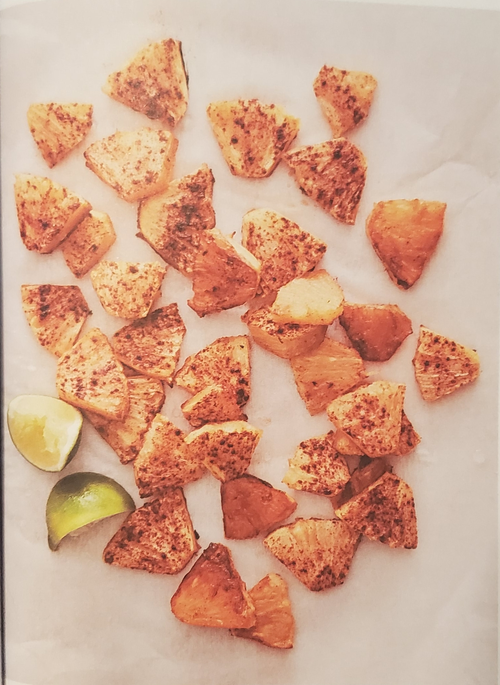

Cinnamon Roasted Pineapple

Description
A favourite at parties, serve this dish warm and you are sure to be invited back. Taken from Jessica Seinfeld's cookbook: VEGAN, at Times.
Ingredients
- 1 pineapple
- 1 tsp ground cinnamon
- 1/4 tsp flaky sea salt
- 1 lime, cut into wedges
Preparation
- Heat the oven to 450F
- Cut off the top and bottom of the pineapple, then trim off the skin.
- Cut the pineapple into quarters lengthwise and cut the long core from each piece.
- Slice the pineapple crosswise into 1/2 inch pieces.
- Put the pineapple pieces on a baking tray lined with parchment paper in a single layer.
- Sprinkle with the cinnamon.
- Roast, stirring halfway through, until tender and carmelized, 35 to 45 minutes.
- Sprinkle with the salt and serve with lime wedges.
Return Home